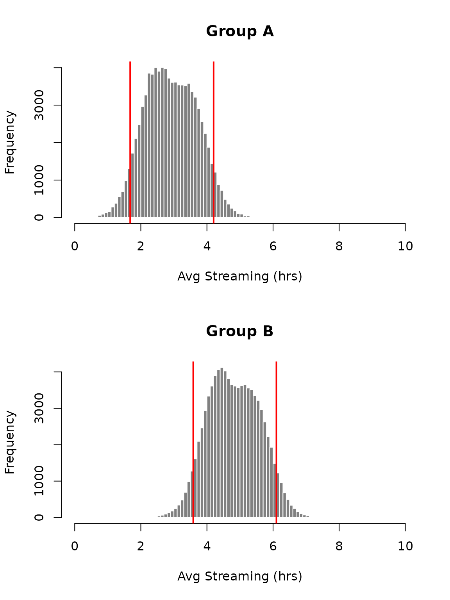
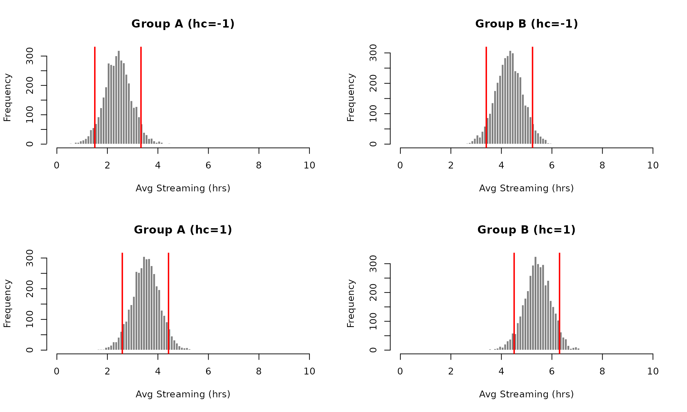
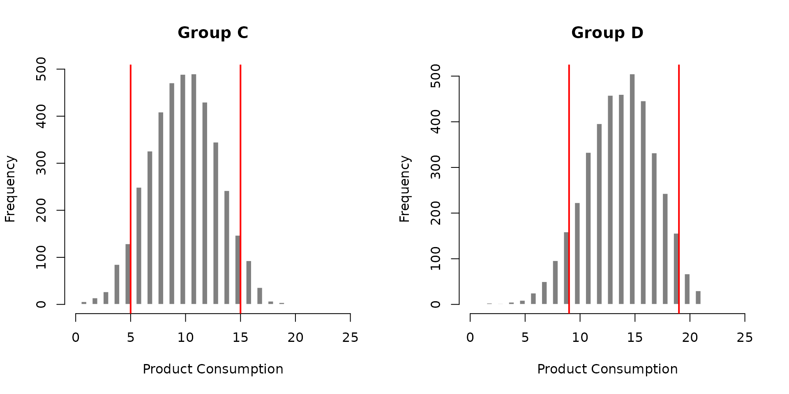
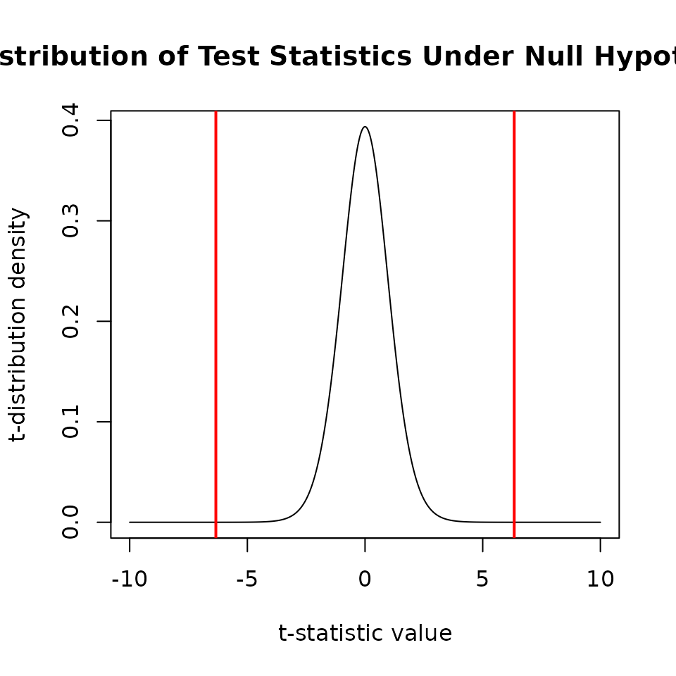

Probabilistic A/B Testing with rstanarm
Imad Ali
2025-12-03
Source:vignettes/ab-testing.Rmd
ab-testing.RmdAbstract
This case study shows how basic A/B testing using Stan and Bayesian methods can be used to facilitate business decisions. In practice, we find this approach useful given its ability to quantify domain-specific business knowledge and hypotheses through the use of prior distributions. Instead of using p-values and confidence intervals, we are able to perform inference with probability intervals estimated from posterior predictions. In addition to the results being highly interpretable, this approach allows us to quantify business risk.
Introduction
A/B testing is an experiment. It is essentially a randomized controlled trial in an industry setting. The test or experiment is conducted on a subset of users in order to determine if a change in service (e.g. user experience) will have a positive impact on the business, before rolling out that change to all the users. (Here we consider static A/B testing where inference is performed after the experiment. For A/B testing where the users are dynamically allocated to the outperforming group during the experiment consider multi-arm bandits.)
Here are a few stylized scenarios where A/B testing could provide useful insight:
- If you change the order in which information is displayed on a service will users spend more time on the service?
- If you personalize the cover art for streaming content are users more likely to stream that content?
- Are users more responsive to a revised recommendation system?
- Is there a noticeable difference between the three point accuracy of two basketball players?
- In a drug trial, is there evidence that the treatment is better than the placebo?
Typically, A/B testing involves one group of people being served the existing content (control group, group A) while another group is served different content (treatment group, group B) and, through a measurable indicator, the business wants to determine if there is a difference in reaction between the two groups. If we compare the two groups and find that the difference in the indicator is large (relative to our uncertainty) then we can argue that the different content drove that change. Conversely, if the change was minimal then we may be hesitant to conclude that the different content resulted in any change in behavior at all. In that situation perhaps the content needs to be redesigned and retested.
Most A/B testing approaches used in practice typically rely on frequentist hypothesis testing methods. Not only are the results of these methods difficult to interpret, but they can also be misleading. Terms such as “p-values” and “confidence intervals” are often misinterpreted as probabilities directly related to the quantity of interest (e.g. the difference in means between two groups). P-values are also often used as cutoffs for business decisions. In other words, reaching a statistically significant result is often sufficient to convince a business to move forward with a particular decision.
We argue that these decisions should not be reductively derived from arbitrary cutoffs (e.g. a p-value of less than 0.05). Instead they should be determined by domain-specific experts who understand the industry, with statisticians providing interpretable results that can help these experts make more informed decisions. This case study provides a way for domain-specific experts to apply their knowledge to the statistical inference process of A/B testing through prior distributions. Additionally, the experts can quantify the risk they are willing to take and probabilistically incorporate this into the inference.
Some key benefits to the Bayesian approach outlined in this case study include,
- Allowing domain-specific experts to apply their knowledge and appetite for risk to statistical inference.
- Modeling the data rather than defining/computing a test statistic from the data. (This allows us to perform inference on the (predicted) data instead of the parameters.)
- The ability to describe differences in groups probabilistically rather than using traditional hypothesis testing methods.
- Quantifying null hypotheses in priors.
We use simple examples to show how to apply Bayesian inference to A/B testing using continuous and count data. The examples used here are analogous to the t-test and the Fisher’s exact test, but the methodology discussed can be applied to data that follow other distributions. The first section considers continuous data (assumed to be generated from the normal distribution) and the second section considers count data (assumed to be generated from the binomial distribution). (If you need a referesher on how convoluted hypothesis testing is, Appendix A goes over the interpretation of p-values using a two-sample t-test as an example.)
At a high-level, we stress that frequentist methods focus on the distribution of the test statistic as opposed to the quantity of interest (i.e. predictions or parameters). In such methods inference is done by understanding how the observed test statistic compares to the distribution of the test statistic under the null hypothesis. Alternatively, the Bayesian approach proposed here allows the statistician to perform inference directly on the quantity of interest (in this case predicted data), which is more transparent and informative in the context of A/B testing.
Continuous Data
This example is analogous to the two sample t-test (specifically Welch’s t-test) where the statistician is interested in testing if there is a noticeable difference between the means of two different samples.
Suppose an online streaming company is interested in testing whether ads affect the consumption of their service. The hypothesis is that reducing ads will increase hourly streaming consumption. Since this decision can be costly if a significant amount of revenue is derived from ads, it would be useful to conduct a test to evaluate the impact of ad reduction. One way to test this is to draw two random samples from the user base, serve them with different levels of ad content, and see if there is a substantial difference in streaming consumption (say hours per day). Suppose we treat the two groups in the following way,
- Group A (control): streaming service contains ads.
- Group B (treatment): streaming service contains no ads.
The data collected might look something like the following below.
Each observation is a user’s average daily streaming consumption in
hours. Suppose we also have an additional (binary) variable
hc which defines whether a user is predisposed to being a
high consumer of streaming content (a value of 1 represents a
high consumer and a value of -1 represents a low consumer).
set.seed(123)
group <- c(rep(1,10), rep(2,12))
group <- factor(c(rep("A",10), rep("B",12)))
N <- length(group)
hc <- sample(c(-1,1), N, replace = TRUE)
effect <- c(3,5)
lp <- effect[group] + 0.7*hc
y <- rnorm(N, lp, 0.5)
experiment <- data.frame(y = y,
group = factor(group),
hc = hc)
experiment
## y group hc
## 1 2.479907 A -1
## 2 2.500386 A -1
## 3 2.355341 A -1
## 4 3.422079 A 1
## 5 3.193457 A -1
## 6 3.948925 A 1
## 7 2.716691 A 1
## 8 4.050678 A 1
## 9 2.063604 A -1
## 10 1.766088 A -1
## 11 5.591013 B 1
## 12 5.186998 B 1
## 13 5.335554 B 1
## 14 3.987480 B -1
## 15 4.856653 B 1
## 16 4.718894 B -1
## 17 5.776687 B 1
## 18 3.730932 B -1
## 19 4.926907 B -1
## 20 4.513232 B -1
## 21 4.152464 B -1
## 22 6.147563 B 1In order to determine if there is a difference between the groups we
need to define a model that predicts the outcome for each group. The
data has been generated from the normal distribution so it is
appropriate to specify a normal likelihood. (Often we do not know how
the data is generated and have to make an assumption about which
distribution should be used to model the likelihood.) Since we are
modeling the outcome we can include other variables, such as
the high consumer indicator hc. Traditional hypothesis
testing methods are focused on comparing the outcome of two groups. Here
we model the outcome before comparing the groups. This allows us to
include additional information in the model which will enable us to
perform more granular inferences.
Next we need to specify prior distributions on each of these parameters. This is where the domain-specific expert can provide valuable input. For example, they may believe that (due to poor sampling) the sampled average of daily streaming hours is too low for each group. In such a situation a prior can be applied to coerce the estimated average closer to the value they feel is more appropriate and representative of the population.
Putting these pieces together gives us the model below. \(y\) is the outcome (average streaming hours) and \(sigma\) is the residual standard deviation (i.e. the standard deviation of \(y\) conditional on the parameters and the data). \(\mu\) is the parameter associated with the variable \(group\) which defines group membership, and \(\beta\) is the parameter associated with the the high consumer indicator. One limitation of this approach is that \(\sigma\) does not vary among groups. However, in this case it is sufficient to assume that the outcome of both groups has the same standard deviation. (In order to allow the standard deviation to vary among groups the model would have to be fit in rstan, which would require defining the model in a Stan file.)
\[ \begin{align*} y_i \sim &\mathcal{N}(\mu_A \cdot groupA_i + \mu_B \cdot groupB_i + \beta \cdot high\_consumer_i, \sigma) \\ \mu_A \sim& \mathcal{N}(3,1) \\ \mu_B \sim& \mathcal{N}(3,1) \\ \beta \sim& \mathcal{N}(0,1) \\ & \mbox{(default prior specified on } \sigma \mbox{)} \end{align*} \]
With regard to priors, we have applied \(\mathcal{N}(3,1)\) distributions on both group effects. The reasoning behind this is twofold:
- Based on prior knowledge (past data and/or domain specific experts) we believe that users spend around three hours per day on the service (regardless of what our random sample says).
- We allow the hyperparameters for both group groups to be identical to quantify our belief that group B (which received the treatment) is not substantially different from group A. This can be interpreted as incorporating the belief underlying our null hypothesis into the prior. More importantly, this approach allows us to be more conservative when we do our inference. If we end up concluding that the two groups are different, we can say that the difference in behavior was so strong that it overcame our prior belief that the two groups are identical.
Now that we have established our model, we need to fit the model to
the data so that we can estimate the parameters. We can do this using
the rstanarm
package which can fit a Bayesian linear regression model (using the
stan_glm() function) without an intercept, and with group
membership and additional variables as parameters. We fit the model
below.
fit <- stan_glm(y ~ 0 + group + hc,
data = experiment,
family = gaussian(link="identity"),
prior = normal(c(3,3,0), 1),
seed = 123)Recall that Stan uses a sampling algorithm to estimate the joint posterior distribution of the parameters which means that we have samples instead of point estimates for the parameter values. The medians for each parameter are provided below.
c(coef(fit), sigma = sigma(fit))
## groupA groupB hc sigma
## 2.9614608 4.8750319 0.5630955 0.4960421With these estimates it looks like Group A had an average consumption of about 3 hours while Group B had an average consumption of about 5 hours. This gives us a difference in consumption of approximately 2 hours. Unfortunately, this assessment does not say anything about how uncertain this difference is. We would like to be able to say something like “we are \(p\%\) sure that the two groups are different enough”.
We can quantify the uncertainty of how different the two estimates are by computing sample quantiles on the posterior predictive distribution. This is often referred to as a credible interval, although the preferred term is predictive interval when describing predictions (and posterior interval when describing parameters).
If we compute the \(90\%\) predictive interval then we can say that \(90\%\) of the posterior predictions for that group lie between that interval. In order for us to evaluate whether the two groups are different enough we can compute the overlap coefficient, which describes the overlap of the prediction intervals for each group as a proportion. For example, suppose there is a \(15\%\) overlap between the \(90\%\) prediction intervals in each of the two groups. This allows us to say, given that we are \(90\%\) certain about where the predictions lie, there’s a \(15\%\) chance that the two groups are similar.
The functions below compute the proportion of overlap between the two groups.
#' Quantify Overlapping Proportion
#' Compute how much of the smaller distribution overlaps with the larger (i.e. wider) distribution.
#' @param large Posterior predictive samples that have larger range than \code{small}.
#' @param small Posterior predictive samples that have smaller range than \code{large}.
#' @param p Probability to compute prediction interval.
#' @return A proportion between 0 and 1 indicating how much of \code{small} is contained in \code{large} given the credible interval specification.
overlap_prop <- function(large, small, p = 1) {
p_lwr <- (1-p)/2
p_upr <- 1 - p_lwr
large_ci <- quantile(large, probs = c(p_lwr, p_upr))
left <- min(large_ci)
right <- max(large_ci)
indxs <- which(small >= left & small <= right)
return(length(indxs)/length(small))
}
#' Quantify Overlapping Posterior Predictive Distributions
#' Quantify the overlap between posterior samples from two distributions.
#' @param a Group A posterior predictive samples.
#' @param b Group B posterior predictive samples.
#' @param p Probability to compute credible interval.
#' @return A proportion between 0 and 1 indicating how much of the credible intervals for \code{a} and \code{b} overlap with one another.
overlap <- function(a, b, p = 1) {
length_a <- dist(range(a))
length_b <- dist(range(b))
if (length_a >= length_b) {
out <- overlap_prop(a, b, p)
}
else if (length_a < length_b) {
out <- overlap_prop(b, a, p)
}
return(out)
}Below we compute the \(0.9\) prediction interval for both groups. Note that the prediction interval choice is arbitrary, and may vary depending on the applied context and the appetite for uncertainty. This is also where we recommend getting input from domain-specific experts. In this case we are willing to accept a \(10\%\) chance of being wrong about where the predictions lie. The closer the prediction interval is to \(1\) the more risk averse the business is with regards to inference.
pp_a <- posterior_predict(fit, newdata = data.frame(group = factor("A"), hc = experiment$hc))
pp_b <- posterior_predict(fit, newdata = data.frame(group = factor("B"), hc = experiment$hc))
pp_a_quant <- quantile(pp_a, probs = c(0.05,0.95))
pp_b_quant <- quantile(pp_b, probs = c(0.05,0.95))
overlap(pp_a, pp_b, p = 0.9)
## [1] 0.2356818
par(mfrow=c(2,1))
# group A
hist(pp_a, breaks = 50, col = '#808080', border = '#FFFFFF',
main = "Group A",
xlab = "Avg Streaming (hrs)",
xlim = c(0,10))
abline(v = pp_a_quant[1], lwd = 2, col = "red")
abline(v = pp_a_quant[2], lwd = 2, col = "red")
# group B
hist(pp_b, breaks = 50, col = '#808080', border = '#FFFFFF',
main = "Group B",
xlab = "Avg Streaming (hrs)",
xlim = c(0,10))
abline(v = pp_b_quant[1], lwd = 2, col = "red")
abline(v = pp_b_quant[2], lwd = 2, col = "red")
After computing the \(90\%\) prediction interval for both groups we find an overlap proportion of approximately \(0.25\). Thus, given that we are \(90\%\) sure about our posterior predictions for the two groups, we are about \(75\%\) sure that the two groups are in fact different. Going back to the business context, we can conclude that we are \(75\%\) sure that reducing ads increases daily streaming consumption given our acceptable risk of being \(10\%\) wrong about daily streaming consumption.
Since we modeled the outcome using a predictor (in addition to group membership variables) we can vary the predictor as well as group membership for an observation for more detailed inference. Below we plot the prediction intervals for each group and high consumer variable combination. This allows to us compare the difference in average streaming hours among the two groups for those individuals that were categorized as high/low consumers.
pp_a0 <- posterior_predict(fit, newdata = data.frame(group = factor("A"), hc = -1))
pp_b0 <- posterior_predict(fit, newdata = data.frame(group = factor("B"), hc = -1))
pp_a1 <- posterior_predict(fit, newdata = data.frame(group = factor("A"), hc = 1))
pp_b1 <- posterior_predict(fit, newdata = data.frame(group = factor("B"), hc = 1))
pp_a0_quant <- quantile(pp_a0, probs = c(0.05,0.95))
pp_b0_quant <- quantile(pp_b0, probs = c(0.05,0.95))
pp_a1_quant <- quantile(pp_a1, probs = c(0.05,0.95))
pp_b1_quant <- quantile(pp_b1, probs = c(0.05,0.95))
par(mfrow=c(2,2))
# group A, x = 0
hist(pp_a0, breaks = 50, col = '#808080', border = '#FFFFFF',
main = "Group A (hc=-1)",
xlab = "Avg Streaming (hrs)",
xlim = c(0,10))
abline(v = pp_a0_quant[1], lwd = 2, col = "red")
abline(v = pp_a0_quant[2], lwd = 2, col = "red")
# group B, x = 0
hist(pp_b0, breaks = 50, col = '#808080', border = '#FFFFFF',
main = "Group B (hc=-1)",
xlab = "Avg Streaming (hrs)",
xlim = c(0,10))
abline(v = pp_b0_quant[1], lwd = 2, col = "red")
abline(v = pp_b0_quant[2], lwd = 2, col = "red")
# group A, x = 1
hist(pp_a1, breaks = 50, col = '#808080', border = '#FFFFFF',
main = "Group A (hc=1)",
xlab = "Avg Streaming (hrs)",
xlim = c(0,10))
abline(v = pp_a1_quant[1], lwd = 2, col = "red")
abline(v = pp_a1_quant[2], lwd = 2, col = "red")
# group B, x = 1
hist(pp_b1, breaks = 50, col = '#808080', border = '#FFFFFF',
main = "Group B (hc=1)",
xlab = "Avg Streaming (hrs)",
xlim = c(0,10))
abline(v = pp_b1_quant[1], lwd = 2, col = "red")
abline(v = pp_b1_quant[2], lwd = 2, col = "red")
In the plot below we show how the overlap proportion will vary as the prediction interval varies. To put it differently, it shows how the probabilistic difference between groups varies as risk varies. Notice that the more risk we take when defining our prediction interval (i.e. the closer the prediction interval is to 0) the lower the overlap proportion, and consequentially the more apparent the difference between the two groups.
# prediction interval probabilities
ci_p <- seq(0.1,1, by = 0.05)
# compute proportions
overlap_ab <- sapply(ci_p, function(s){overlap(pp_a, pp_b, s)})
# plot
plot(ci_p, overlap_ab, type = "o", pch = 20,
xaxt = "n", yaxt = "n",
main = "Group A vs Group B",
xlab = "Prediction Interval Probability (1-Risk)",
ylab = "Overlap Proportion (Group Similarity)")
axis(1, seq(0,1,by=0.1), cex.axis = 0.8)
axis(2, seq(0,1,by=0.1), cex.axis = 0.8)
abline(v = 0.5, lty = 2)Count Data
This example is analogous to Fisher’s exact test where the statistician is interested in testing differences in proportions (particularly in the form of a contingency table).
Now, suppose that the business wants to know whether a product sells better if there is a change to the online user interface (UI) that users interact with to buy the product. They run an experiment on two groups and obtain the following results,
- Group C (control): 10 users out of a sample of 19 purchased the product with the default UI.
- Group D (treatment): 14 users out of a sample of 22 purchased the product with the alternative UI.
Here we can assume that the data is binomially distributed, in which case we can define the model for the the two groups as follows,
\[ y_i \sim \mbox{Bin}(\mbox{logit}^{-1}(\mu_C \cdot groupC_i + \mu_D \cdot groupD_i), N_i)\\ \]
where \(\mu\) is the parameter for each group, \(group\) is a binary variable indicating group membership, \(y\) is the number of users that purchased the product and \(N\) is the total number of users in each group. Below we fit this model to the data.
experiment_bin <- data.frame(group = factor(c("C","D")),
y = c(10,14),
trials = c(19,22))
fit_group_bin <- stan_glm(cbind(y, trials - y) ~ 0 + group, data = experiment_bin,
family = binomial(link="logit"), seed = 123)Similar to the method described in the previous section we compute and plot the \(90\%\) prediction intervals for the posterior predictions in each group. We also compute the overlap proportion of these two sets of predictions.
# pp_c <- posterior_linpred(fit_group_bin, newdata = data.frame(group = factor("C")), transform = TRUE)
# pp_d <- posterior_linpred(fit_group_bin, newdata = data.frame(group = factor("D")), transform = TRUE)
# below doesn't work as expected (predictions are bigger than the number of trials)
# pp_c <- posterior_predict(fit_group_bin, newdata = data.frame(group = factor("C"), trials = 19))
# pp_d <- posterior_predict(fit_group_bin, newdata = data.frame(group = factor("D"), trials = 22))
pp <- posterior_predict(fit_group_bin)
pp_c <- pp[,1]
pp_d <- pp[,2]
pp_c_quant <- quantile(pp_c, probs = c(0.05,0.95))
pp_d_quant <- quantile(pp_d, probs = c(0.05,0.95))
# compute overlap
overlap(pp_c, pp_d, p = 0.9)
## [1] 0.6885
# plot
# group C
par(mfrow=c(1,2))
hist(pp_c, breaks = 50, col = '#808080', border = '#FFFFFF',
main = "Group C",
xlab = "Product Consumption",
xlim = c(0,25))
abline(v = pp_c_quant[1], lwd = 2, col = "red")
abline(v = pp_c_quant[2], lwd = 2, col = "red")
# group D
hist(pp_d, breaks = 50, col = '#808080', border = '#FFFFFF',
main = "Group D",
xlab = "Product Consumption",
xlim = c(0,25))
abline(v = pp_d_quant[1], lwd = 2, col = "red")
abline(v = pp_d_quant[2], lwd = 2, col = "red")
Looking at the histograms it’s clear that there’s quite a bit of overlap between the two groups. The overlap proportion is about 0.7. So under our \(90\%\) prediction interval, there is a \(70\%\) chance that there is no difference in behavior when the UI changes. This might suggest that we don’t have strong evidence that the UI change encouraged a change in behavior.
Below we show how the overlap proportion varies based on the amount of risk we’re willing to take when we define our prediction intervals. Similar to the continuous example in the previous section, risk is inversely related to group similarity.
# prediction interval probabilities
ci_p <- rev(seq(0.1,1, by = 0.05))
# compute proportions
overlap_cd <- sapply(ci_p, function(s){overlap(pp_c, pp_d, s)})
# plot
plot(ci_p, overlap_cd, type = "o", pch = 20,
xaxt = "n", yaxt = "n",
main = "Group C vs Group D", xlab = "Prediction Interval Probability (1-Risk)", ylab = "Overlap Proportion (Group Similarity)")
axis(1, seq(0,1,by=0.1), cex.axis = 0.8)
axis(2, seq(0,1,by=0.1), cex.axis = 0.8)
abline(v = 0.5, lty = 2)
Note, this example involved a really small data set (only one observation for each group). But the same model can easily be extended to many observations within each group. Also, just as we described in the continuous example, we can define a more comprehensive model for the outcome if we had additional predictors.
Benefits of Bayesian Methods
The key benefits that we have discussed include the ability to probabilistically interpret the results of our inference, and the ability to incorporate prior beliefs (i.e. business knowledge and hypotheses) into our models.
Interpretation of probability
With regards to interpretation, there are some advantages with taking a Bayesian inference approach to A/B testing using Stan:
- The ability to communicate our results using the intuitive concept of probability.
- The ability to quantify business risk using probability when doing inference.
Quantifying our uncertainty probabilistically enables us to make statements like “based on the data collected, the model specified, and the risk we are willing to take; we are 80% certain that the two groups are different.” This is much more interpretable than statements like ‘with a p-value of less than 0.2 we can reject the null hypothesis that the two groups are identical’. While this is not exclusively a Bayesian benefit (i.e. we could have completely excluded priors from our models, estimating the parameters solely from the likelihood of the data), we took advantage of the fact that appropriately implemented Bayesian computational methods rely on robust sampling methods. These samples can then be transformed and used to make probabilistic statements about the posterior predictive distribution, and consequentially about the question being asked.
Incorporating prior beliefs
The ability to define a prior distribution on your parameters is a useful feature of Bayesian methods. Prior information can be incorporated in your model with two choices: the type of the distribution and how the distribution is parametrized.
The type of distribution relates to which distribution you choose to define on the parameters. In the continuous data example we chose the normal distribution. But, since the underlying data (hours streamed per day) cannot be negative, it might be more sensible to define a truncated normal distribution as the prior (which is straightforward to implement in rstan). This gives us the opportunity to model the data generation process more appropriately.
How the prior distribution is parameterized reflects your belief on the value that parameter takes. This gives us the opportunity to quantify business knowledge in prior distributions. In the continuous data example we showed how we parameterized the prior distribution for each group’s parameter to capture our prior belief that the two groups are similar. A similar approach can be taken for the treatment group in the count data example.
With these types of priors, if we concluded that the two groups are in fact different then we could really be sure that the treatment actually changed the treatment group’s behavior. In other words, the treatment group’s observed behavior overcame our prior belief. We could also tune this belief to be more or less strong by adjusting where most of the density/mass of the prior distribution sits. Applying this type of prior would help mitigate false-positive conclusions from this type of analysis.
Conclusion
Below is an abstracted summary of the inference process we’ve gone through to compare groups involved in A/B testing.
- Model the indicator that is being measured to track the difference between the two groups.
- Compute the prediction interval \(p\) over the posterior predictions of the two groups. \(1-p\) quantifies how much risk the business is willing to take in regards to the predicted indicator. The value of \(p\) should be driven by domain-specific experts.
- Compute the proportion \(o\) of how much each interval overlaps with one another. \(o\) defines the similarity between the two groups.
After implementing the steps above, we can construct the following conclusion: given there is a \((1-p) \cdot 100\) percent chance that we are wrong about the predictions from our model, there is a \((1-o) \cdot 100\) percent chance that the two groups are different.
The Bayesian methods outlined in this case study focused on modeling the data generation process and performing inference on the posterior predictive distribution of two groups. We did not need to worry about computing test statistics and determining the distribution of these statistics under the null hypothesis. Nor did we need to calculate p-values to figure out whether the groups involved in the A/B test are different. Instead we performed inference directly on the posterior predictions. By constructing prediction intervals and computing the overlap of these intervals we are able to probabilistically convey how sure we are about the difference between the two groups. Bayesian inference gives statisticians the ability to quantify business information/risk and enables them to communicate uncertainty unambiguously to decision makers, allowing more informed decisions to be made.
References
Fisher’s exact test. Wikipedia. Available from https://en.wikipedia.org/wiki/Fisher%27s_exact_test.
Gallo, A. (2017) A Refresher on A/B Testing. Harvard Business Review. https://hbr.org/2017/06/a-refresher-on-ab-testing.
Goodrich, B., Gabry, J., Ali, I. & Brilleman, S. (2019). rstanarm: Bayesian applied regression modeling via Stan. R package version 2.17.4. https://mc-stan.org/.
Krushke, J.K. (2015). Doing Bayesian Data Analysis - A Tutorial with R, JAGS, and Stan. Elsevier, New York, 2nd edition.
Overlap coefficient. Wikipedia. Available from https://en.wikipedia.org/wiki/Overlap_coefficient
Stan Development Team (2019). RStan: the R interface to Stan. R package version 2.19.2. https://mc-stan.org/.
Student’s t-test. Wikipedia. Available from https://en.wikipedia.org/wiki/Student's_t-test.
Appendix A: Refresher on p-values
Recall that frequentist methods of hypothesis testing involve constructing a test statistic with the available data. Then, using the distribution of that test statistic under the null hypothesis, you can determine the probability of observing statistics that are more extreme than the one calculated. This is known as a p-value. A small p-value suggests a small probability of observing a more extreme test statistic, which in turn means that it is unlikely for that statistic to have been generated under the null hypothesis. Since the statistic is computed from the data this suggests that the data itself is unlikely to have been generated under the null hypothesis. The value of how small a p-value should be to arrive at this conclusion is up to the statistician.
As an example consider the data associated with Group A and Group B in the continuous data section. The null hypothesis is whether the two groups have equal means. Below we compute Welch’s test statistic and p-value given the data.
group_a <- experiment$y[experiment$group == "A"]
group_b <- experiment$y[experiment$group == "B"]
# Relevant dplyr code
# group_a <- experiment %>% filter(group == "A") %>% select(y) %>% unlist %>% unname
# group_b <- experiment %>% filter(group == "B") %>% select(y) %>% unlist %>% unname
t_test <- t.test(x=group_a, y=group_b)
t_stat <- abs(t_test$statistic)
p_value <- t_test$p.value
print(p_value)
## [1] 4.492529e-06
# You can manually compute the p-value with the following code
# p_value <- pt(-t_stat, t_test$parameter)*2
# you can manually compute the confidence intervals with the following code
# group_a_mean <- mean(group_a)
# group_b_mean <- mean(group_b)
# v <- sqrt((var(group_a)/length(group_a)) + (var(group_b)/length(group_b)))
# ci_lwr <- (group_a_mean - group_b_new_mean) - abs(qt(0.025, t_test$parameter[['df']])*v)
# ci_upr <- (group_a_mean - group_b_new_mean) + abs(qt(0.025, t_test$parameter[['df']])*v)The p-value in this case is really small, approximately zero. We can visualize this result. Since we know that the test statistic is t-distributed we can plot what the distribution of the test statistic under the null, along with the test statistic calculated with the observed data. This is illustrated below. The red lines are the (two-tailed) test statistics calculated from the data.
dof <- t_test$parameter[["df"]]
x <- seq(-10,10,length.out = 1e3)
plot(x, dt(x, dof), type = "l",
main = "Distribution of Test Statistics Under Null Hypothesis",
xlab = "t-statistic value",
ylab = "t-distribution density")
abline(v=-t_stat, col="red", lwd=2)
abline(v=t_stat, col="red", lwd=2)
Given the small p-value we can make the following sequence of conclusions:
- The computed test statistic is unlikely to occur under the null hypothesis.
- The data used to compute this statistic is unlikely to have been generated under the null hypothesis.
- Therefore the null hypothesis must be invalid and can be rejected, allowing us to conclude that the two groups are different.
Notice how far removed we are from the data and the observed data generation process. Once we calculate the test statistic we step away from the distribution of the data itself and start dealing with the distribution of the test statistic under the null. We were also unable to encode any prior belief or business knowledge into our inference.
Appendix B: Hierarchical Example
Here we show how to use hierarchical (or multilevel) models as an alternative modeling approach when performing A/B tests. Using the data in the continuous example we want to build a model where we account for group-level intercepts while allowing information to be shared among the groups.
\[ \begin{align*} y_{i=A} \sim &\mathcal{N}(\mu_A + \beta \cdot high\_consumer_{i=A}, \sigma) \\ y_{i=B} \sim &\mathcal{N}(\mu_B + \beta \cdot high\_consumer_{i=B}, \sigma) \\ \beta \sim& \mathcal{N}(0,1) \\ & \mbox{(default priors specified on covariance matrix and } \sigma \mbox{)} \end{align*} \]
Below we fit the model.
fit_hier <- stan_glmer(y ~ 0 + (1 | group) + hc,
prior = normal(0, 1),
data = experiment,
family = gaussian(link="identity"),
seed = 123)
coef(fit_hier)
## $group
## (Intercept) hc
## A 2.952043 0.5609544
## B 4.884713 0.5609544
##
## attr(,"class")
## [1] "coef.mer"
fixef(fit_hier)
## hc
## 0.5609544
ranef(fit_hier)
## $group
## (Intercept)
## A 2.952043
## B 4.884713
##
## with conditional variances for "group"With this modeling approach we can perform the same inferences as we have shown above while accounting for the hierarchical nature of the data.